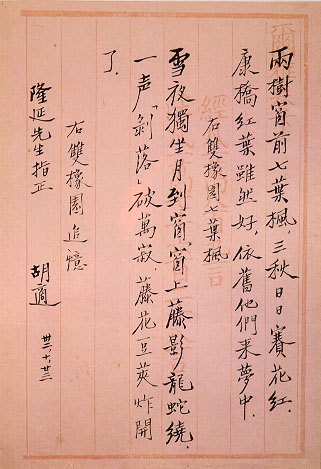

義助慰安婦 —— 李敖百件珍藏義賣藝術品（第90件） 品 名： I3. 胡適雙橡園詩 預估價： 50 萬 成交價： （保留） 說 明： 雙橡園為中華民國駐美大使館所在地，此二首詩為胡適先生一九四三年所寫，用以懷念當時的雙橡園。胡適先生的毛筆字很秀氣，但不輕易寫出來，故作品非常少，益顯出它的珍貴。 
雙橡園為中華民國駐美大使館所在地，此二首詩為胡適先生一九四三年所寫，用以懷念當時的雙橡園。胡適先生的毛筆字很秀氣，但不輕易寫出來，故作品非常少，益顯出它的珍貴。